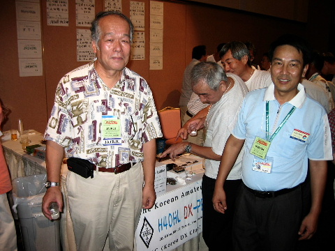

Reportの読み方
[Back Issues Nov.2005]
TIME:UTC(JST-09:00)
Report from JA1RJU (PM95sq)
30.Nov.2005(15:00c)
*ZL-TV 02:00- 45.24/25/26--
*VK-TV 03:00- 46.172/240 --
29.Nov.2005(15:00b)
*VK-TV 03:00- 46.172 -- weak
28.Nov.2005(15:00c)
*ZL-TV 04:30- 45.24/25/26--
*VK-TV 04:30- 46.172/240 --
*VK-TV 06:20- 46.172 --
27.Nov.2005(15:00b)
26.Nov.2005(15:00c)
*ZL-TV 04:30- 45.250 --
*VK-TV 04:30- 46.172/240 --
25.Nov.2005(15:00c)
*BY-TV 01:50- 49.750
24.Nov.2005(15:00b)
23.Nov.2005(15:00c)
*VK-TV 04:20- 46.240 -- weak
*BY-TV 05:30- 49.750 --
22.Nov.2005(15:00b)
21.Nov.2005(15:00b)
*VK-TV 05:05- 46.172 -- weak
20.Nov.2005(15:00c)
*VK-TV 05:40- 46.172/240 --
19.Nov.2005(15:00c)
*VK-TV 03:30- 46.172/240 --
18.Nov.2005(15:00c)
*VK-TV 03:10- 46.172/240 --
17.Nov.2005(15:00c)
*VK-TV 01:50- 46.172/240 --
16.Nov.2005(15:00b)
15.Nov.2005(15:00b)
14.Nov.2005(15:00c)
*ZL-TV 01:40- 45.250 --
13.Nov.2005(15:00b)
12.Nov.2005(15:00c)
|
◎ Korea DX ClubによるH40HL(Temotu Provience)の運用は今日(11/12)で終了、メンバーは既にHoniara(H44)に戻った。
昨日は28MHz帯でも強力に入感していたが結局、期待された50MHzのオープンは無かった。
一行はTemotuに持ち込めなかった160m関係のアンテナ機材を使ってH44HLを運用している。
|
Report from JA1RJU (QM06cb/PM95sq)
11.Nov.2005(10:00b)
Report from JA1RJU (QM06cb)
10.Nov.2005(15:00c)
*BY-TV 01:00- 49.750 --
*ZL-TV 03:30- 45.24/25/26--
*VK-TV 04:00- 46.172/240 --
*9M-TV 08:00- 48.240/260 --
|
◎ 45/46MHz帯のZL/VKのTVも昨日よりは弱く、代わりに49.750MHzの大陸からのTVが強力に入感するコンデション。
H40HL(Temotu Provience)は11/12日まで、一日の滞在延期が決まったが、
HF帯の同時運用が2局なので、残された日程では6mの運用までは無理か？。
|
09.Nov.2005(15:00e)
*ZL-TV 03:50- 45.250 --
*VK-TV 03:50- 46.172/240 --
FK8SIX/B 04:25- 50.080 CW Beacon weak
FK8SIX/B 05:20- 50.080 CW Beacon again strong!
VK4RGG/B 05:23- 50.080 CW Beacon
VK4BLK 05:34 50.110 SSB
FK1TK 05:36 50.110 SSB QSO with JA5
VK4CV 05:40 50.110 SSB
VK4BLK 05:48 50.120 SSB/CW
VK4RGG/B 06:30- 50.080 CW Beacon still good!
IK2GSO 13:20- 50.*** JT65A EME(JN45-QM06)-25dB
◎ 運用開始が遅れていたKorea DX ClubによるH40HL(Temotu Provience)がようやく始まった。
05:00z過ぎから14MHzのSSBでの運用が最初だったが、12:00z現在、運用が確認されているのは14、7MHz帯だけ。
H40HLのHomepageから察すると、Temotuへの出発が遅れる原因となったのは、長尺のアンテナ類やポールと共に、
160m用のダイポールアンテナを吊り上げるバルーン用のヘリウムガスのボンベを定期便の飛行機に搭載出来なかったためと思われる。
今日はVK/FK8がオープンするFBなコンデションだったので、この遅れは残念だった。
|
08.Nov.2005(15:00c)
*VK-TV 03:50- 46.172/240 --
FK8SIX/B 04:20- 50.080 CW Beacon strong!
FK8SIX/B 06:10- 50.080 CW Beacon
Report from JA1RJU (PM95sq/QM06cb)
07.Nov.2005(15:00c)
*BY-TV 03:00- 49.750 --
◎ 11月6日からの運用が予定されていたKorea DX ClubによるH40HL(Temotu Provience)は11月9日に延期された。
H40HLのHomepageが伝えるところによると、一行は予定していたH44(Solomon)からH40への飛行機の都合で、
今日(7日)現在もHoniaraの空港に足止めされていると。
定期便のパイロットが「安全を保証出来ない」と運行を拒否したとの事だが、理由は明らかにされていない。
Temotuへの次の定期便は1週間後となるため、一行は定期便をあきらめ$24,590を支払いチャーター便を手配し11月9日(水)に現地に向かう予定。
到着後、何日間の運用となるのかは今のところ不明。
1999年4月にH40OOでTemotuから初の6mの運用を行ったJK7TKE・福井さんによると、
SolomonからTemotuまでの飛行機は双発の小型機のため持ち込み手荷物に制限があったとの事なので、
定期便でのDX-Peditionの大量の機材運搬が不可能だった可能性も考えられる。今後のH40HLのHPでの情報に注意。
|
06.Nov.2005(15:00c)
|
◎ 昨日のFK8/VK4のオープンで今日から始まる予定のH40(Temotu Provience)の入感に少なからず期待が持たれたが、
今日は45/46MHz帯のVK/ZLのTVも入感しないほどコンデションは変わってしまった。
HF帯でもH40HLのQRVはまだリポートされていないので、運用開始まで多少時間がかかりそう。
|
05.Nov.2005(15:00e)
*ZL-TV 03:00- 45.24/25/26--
*VK-TV 03:00- 46.172 --
V73SIX/B 03:10- 50.014 CW Beacon
FK8SIX 03:20- 50.080 CW Beacon strong!
VK4RGG 03:30- 50.058 CW Beacon
VK4WS 03:31 50.110/120 CW/SSB
FK8SIX 04:10- 50.080 CW Beacon strong!
VK4WS 04:10 50.110 SSB still good!
DU1EV/B 06:50- 50.008 CW Beacon
04.Nov.2005(15:00c)
*ZL-TV 03:00- 45.240 -- weak
*VK-TV 03:00- 46.172 --
*BY-TV 11:00- 49.750 --
03.Nov.2005(15:00c)
*VK-TV 03:50- 46.172 --
*9M-TV 05:00- 48.240 -- strong!
|
◎ H40(Temotu Provience)からの運用を予定しているKorea DX Clubの一行は11/3日Solomonの首都Honiaraに無事到着した。
Honiaraから2日間H44HLを運用後、11/6に空路Temotuに渡り予定通りH40HLの運用を開始する予定。
|
02.Nov.2005(15:00c)
*VK-TV 02:30- 46.172 --
*BY-TV 04:00- 49.750 --
01.Nov.2005(15:00b)
◎ いよいよ11月。秋のDXシーズンとはいえあまりにもコンデションは悪すぎ。
昼前後に46MHz帯のVK-TVが短時間上昇しても50MHz帯の入感の気配が見られないままフェードアウトする事が多い。
11月5日からKorea DX ClubによるH40HL(Temotu Provience)の運用が開始される予定だが、
伝搬ルートは悪くないので短時間でもオープンを期待したいもの。
8月のハムフェアの会場でお会いしたH44HL/H40HLのチームリーダー・DS2AGH/Kong Ho-Jnn
はJAとのQSOに積極的にトライする事を約束してくれたのだが...。
|

H40HLのリーダー・DS2AGH/Kong(右)